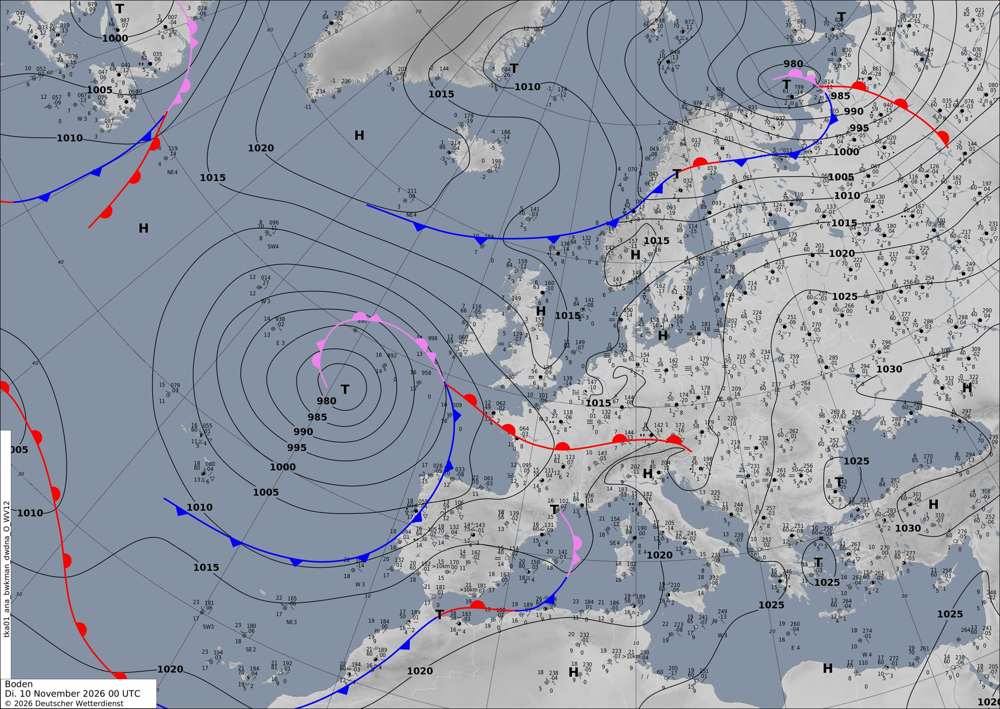

Una borrasca nacida junto a Canarias cruza la Península y riega Francia
Una gran borrasca atlántica no puede subir hacia el norte y la corriente en chorro desvía hacia el sur su energía. De ahí sale una segunda borrasca que mañana y el jueves atraviesa la Península con lluvia abundante, y el viernes llega aire frío a Francia.
Europa y el Atlántico
La protagonista del día es una borrasca profunda en pleno Atlántico, entre Galicia y las Azores. A las 00 UTC de hoy tiene 974 hPa en el centro. En el satélite se ve como una gran coma de nubes enrollada sobre sí misma. En la carta de análisis del DWD aparece como una T de 980 hPa, rodeada por un frente ocluido en espiral. El modelo y los meteorólogos no coinciden al hectopascal, y es normal. Encima de la borrasca hay una bolsa de aire frío en altura: en el mapa de 500 hPa se ve como un círculo cerrado de isohipsas.
¿Por qué no sube hacia Islandia, como tantas borrascas de otoño? Porque el camino del norte está cerrado. Entre Groenlandia e Islandia hay altas presiones de más de 1030 hPa. Mañana, además, se levanta allí una dorsal en altura tan marcada que el programa la detecta como bloqueo. Con esa puerta cerrada, la corriente en chorro corre muy al sur. Mañana a las 00 UTC su núcleo pasa al noroeste de Lisboa a 248 km/h. Mira aquí el chorro apuntando a la Península.
El chorro funciona como una autopista. Junto a él nace una segunda borrasca al norte de Canarias, con 989 hPa mañana a las 00 UTC. Viene cargada de humedad subtropical, y el modelo le calcula hasta 111 mm en 12 horas sobre el mar. Es la que más nos importa: entre mañana y pasado mañana cruza la Península y se ahonda hasta 978,7 hPa sobre Castilla y León el jueves a las 00 UTC. Fíjate en las isobaras cerradas sobre la meseta. La borrasca madre se queda atrás y se va rellenando: el jueves a las 00 UTC ha subido a 988 hPa.
En el resto de Europa: - Junto a Noruega nace otra borrasca, que el viernes baja a 980 hPa al norte del Báltico. Por detrás deja entrar aire frío hacia el sur. - El norte del Adriático recibe lluvias fuertes los tres días, hasta 97 mm en 12 horas según el modelo. - El viernes, las bajas presiones pasan al Mediterráneo y a Centroeuropa: una borrasca sobre Provenza (992,9 hPa) y otra sobre Hungría.
Ojo con la incertidumbre. Si la borrasca que cruza la Península se desvía 100 km en el modelo, cambian mucho los sitios donde más llueve. A 72 horas, tómalo como una tendencia.
En península ibérica y Baleares
Hoy martes la Península ya recibe las primeras nubes. En la carta del DWD hay un frente frío pegado a Portugal y una pequeña borrasca con frente ocluido sobre el Levante. El modelo, en cambio, apenas la marca: es un buen ejemplo de análisis frente a predicción. En el sureste hay mucha energía para tormentas: el CAPE llega a 1896 J/kg sobre Murcia. Entre las 00 y las 12 UTC caen hasta 65,6 mm en algún punto. Por la tarde, el frente entra por el oeste y deja hasta 61 mm en Extremadura antes de medianoche.
Mañana miércoles, delante de la nueva borrasca sopla viento del sur, que trae aire muy templado. A mediodía, el punto más cálido llega a 30,7 °C, una cifra muy alta para noviembre. Las isobaras se aprietan y las rachas llegan a 79 km/h.
La noche del miércoles al jueves es la más lluviosa. Con la borrasca encima de la meseta, el aire húmedo sube con fuerza, también al chocar con el Sistema Central. Ese ascenso es lo que fabrica la lluvia. El modelo da hasta 82,5 mm en 12 horas, con el núcleo cerca de Madrid y una zona de lluvia fuerte de unos 250 000 km². Mira aquí la mancha de lluvia. El jueves sigue lloviendo, con hasta 64,5 mm entre las 00 y las 12 UTC y viento de hasta 63 km/h.
El viernes la borrasca ya se ha ido hacia Provenza. Queda una baja más débil al suroeste de Galicia. Sobre el mar al este de Baleares vuelve a acumularse energía para tormentas, con un CAPE de 2008 J/kg. Allí no se descartan chubascos fuertes.
En Francia
Hoy martes, Francia tiene dos caras. En la carta del DWD, un frente cálido la cruza de Bretaña a los Alpes. Al sur del frente llueve con ganas: el modelo da hasta 33,3 mm entre las 00 y las 12 UTC. En el este, en cambio, una pequeña zona de altas presiones mantuvo el cielo despejado por la noche, y a medianoche había −2,6 °C en el punto más frío.
Mañana miércoles sigue entrando aire templado del sur. Las lluvias continúan, con hasta 27–33 mm en 12 horas, y a mediodía hay algo de energía para tormentas en el sur (CAPE de hasta 1152 J/kg). En los valles alpinos, el aire frío se queda atrapado en el fondo: a medianoche el modelo marca −10,1 °C en el punto más frío.
El jueves se acerca la borrasca ibérica. La presión cae hasta 980,5 hPa en el suroeste a medianoche. Entre las 00 y las 12 UTC llegan hasta 64,5 mm, y el viento alcanza 60 km/h. El viernes la borrasca se sitúa sobre Provenza, y por el norte entra el aire frío de la borrasca del Báltico. A unos 1500 m, la temperatura en 850 hPa media del país cae de 8,4 °C a 3,2 °C, y en algunas zonas baja de −3 °C. Mira aquí cómo bajan los azules.
París y alrededores. Hoy, el frente cálido deja lluvia ligera: 4 mm por la mañana y 6,3 mm hasta medianoche. Hace 7–8 °C a medianoche y 10,5–11,8 °C a mediodía, con poco viento (hasta 11 km/h). El miércoles es suave y casi seco: 12–13 °C a medianoche y 13–14 °C a mediodía, con brisa de hasta 14 km/h. El jueves refresca un poco: 9–11 °C a medianoche y 9–10 °C a mediodía, apenas 0,1 mm y viento de hasta 22 km/h. Para la medianoche del viernes, el aire frío baja el termómetro a 4–5 °C, sin lluvia y con viento de hasta 15 km/h.
Lección del día: Corriente en chorro
Hoy vas a comprobar que las borrascas viajan por la corriente en chorro.
- Abre el chorro y la presión a las 00 UTC de hoy: mira aquí. Hay un núcleo de 243 km/h al este de las Azores, justo al sur de la gran borrasca. Fíjate hacia dónde apunta: hacia el este, hacia la Península.
- Avanza a +24 h: mira aquí. El chorro se ha alargado hasta el noroeste de Lisboa (248 km/h). En su borde sur, al norte de Canarias, ha nacido una borrasca nueva de 989 hPa.
- Avanza a +48 h. Esa borrasca está ahora sobre Castilla y León, con 978,7 hPa. Ha seguido el camino que marcaba el chorro y se ha ahondado por el trayecto.
- Conclusión: para adivinar adónde irá una borrasca, mira antes hacia dónde apunta el chorro. Y si un bloqueo le cierra el paso por el norte, como hoy, el chorro y las borrascas tienen que bajar hacia el sur.
Ponte a prueba
3 preguntas sobre el tiempo de hoy. Puedes mirar el mapa antes de contestar.
¿Por qué la gran borrasca atlántica de hoy no sube hacia Islandia, como suelen hacer muchas borrascas de otoño?
Mañana a las 00 UTC el núcleo del chorro está al noroeste de Lisboa y apunta hacia la Península. ¿Qué cabe esperar de la borrasca que hay al norte de Canarias?
Las borrascas siguen el camino que marca la corriente en chorro. A +48 h, esa borrasca está sobre Castilla y León con 978,7 hPa. Mira aquí.
¿Por qué la medianoche del viernes será en París bastante más fría (4–5 °C) que la del miércoles (12–13 °C)?
Detrás de la borrasca del Báltico baja una masa de aire fría: en París la temperatura a 850 hPa pasa de unos 8 °C el miércoles a −1,5 °C el viernes. Mira aquí.
La carta oficial
Análisis de superficie del servicio meteorológico alemán (DWD) válido el 10/11/2026 a las 00 UTC, dibujado por meteorólogos a partir de observaciones. Aquí sí hay frentes: azul con triángulos, frío; rojo con semicírculos, cálido; morado, ocluido. Las borrascas son T y los anticiclones H. Cómo leer esta carta.
